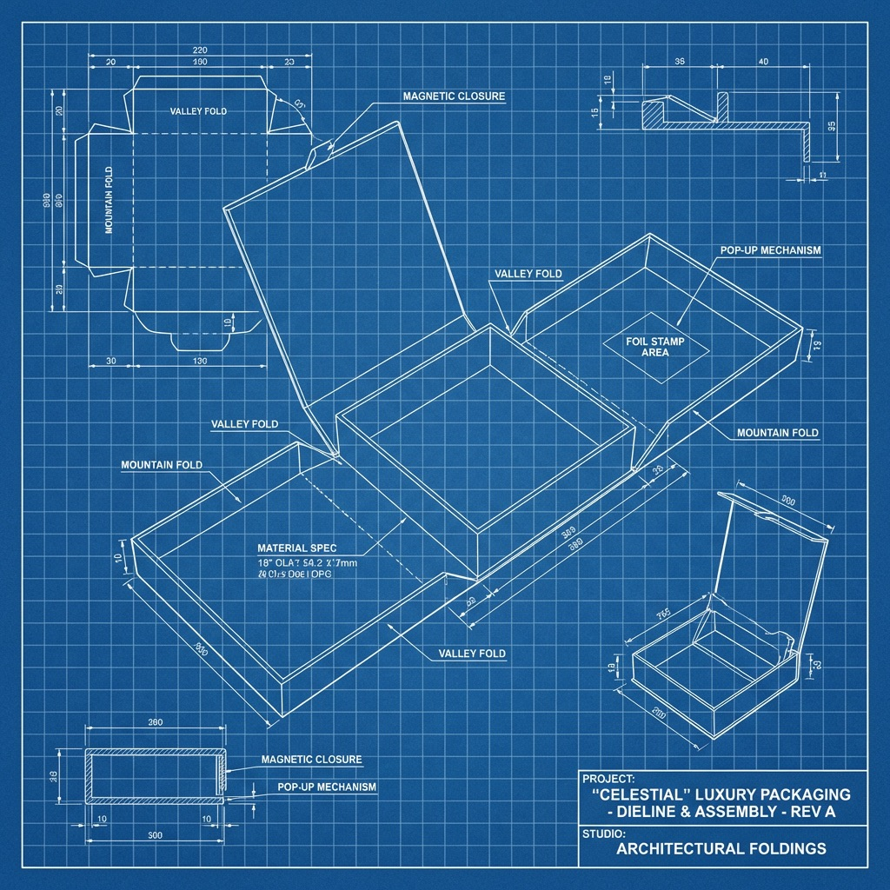
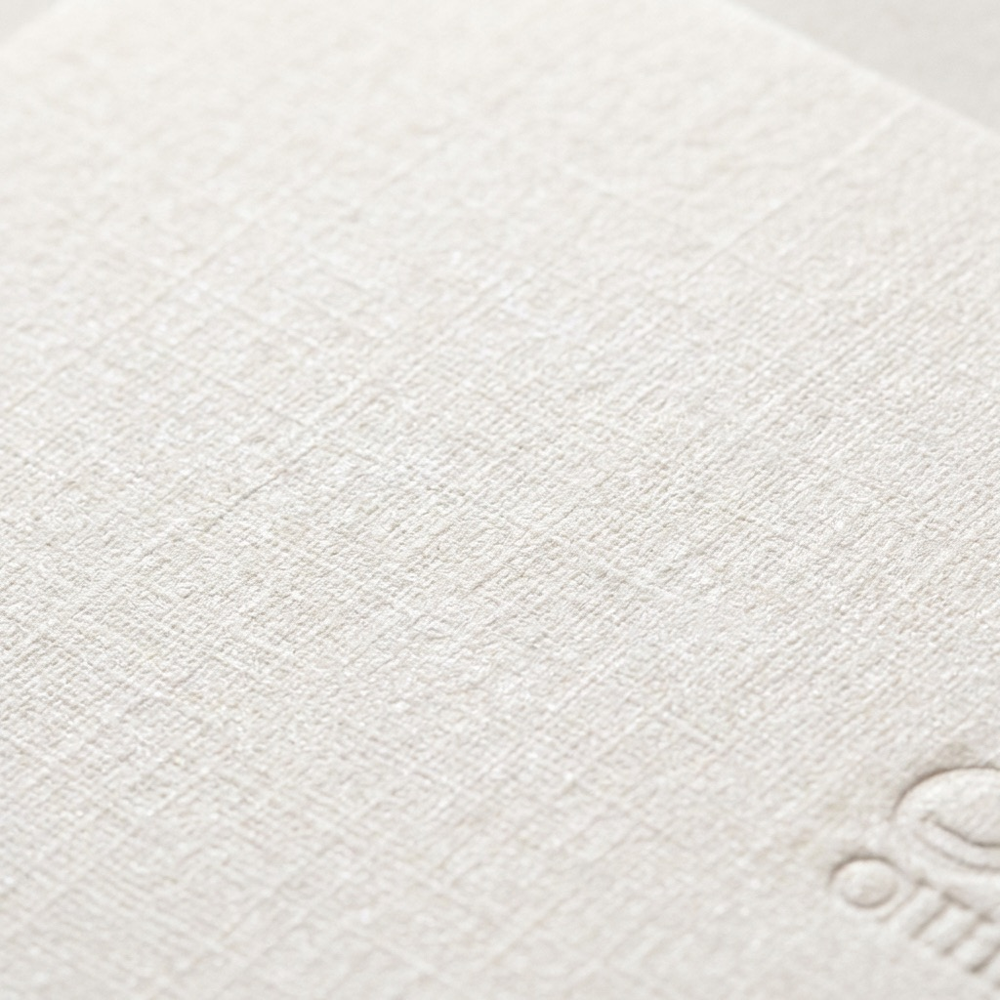

Short answer
Match the approval system before trying to match the ink.
Start with one named master target, then define the exact substrate, substrate color, print route, white-ink plan, coating, lamination, foil, viewing condition, proof type, and acceptance method for every component. A wrapped rigid box and a pressure-sensitive label can carry the same brand intent without producing identical measured or visual results.
Pantone warns that on-screen simulations may not accurately match its physical standards. Physical samples also matter because color changes with material and production conditions. Use digital files to communicate artwork, but use agreed physical evidence to approve packaging.
One code is not one finished appearance. The target, material, process, coating, light, backing, and viewing angle must be considered together.
Component matrix
Build a separate approval path for each surface.
The same artwork can move through different materials and print processes. Record which target and proof control each component before production.
| Component | Appearance variables | Approval evidence |
|---|---|---|
| Wrapped rigid box | Wrap shade, texture, absorption, ink coverage, lamination, soft touch, edge turns, foil, and board show-through. | Production-material proof or assembled sample with the approved wrap and finish stack. |
| Folding carton | Paperboard white point, coating, print method, crease cracking, varnish, lamination, and inside-to-outside difference. | Flat proof plus converted sample when folds, edges, or finishes affect the visual result. |
| Paper label | Face stock shade, texture, ink holdout, varnish, emboss, foil, adhesive show, bottle color, and application surface. | Label proof applied to the intended container or a controlled representative surface. |
| Clear film label | Container color, product fill, white-ink opacity, transparent ink, double hit, adhesive appearance, and backlighting. | Layered artwork proof and applied-container sample using the intended white-ink construction. |
| Paper bag | Paper shade, print coverage, fiber texture, lamination, gusset folds, handle color, ribbon, and foil. | Bag material proof reviewed beside the approved box and any handle or ribbon reference. |

Master target
Name the physical reference, edition, and condition.
A Pantone number communicates a color family and target within a defined system. Record whether the reference is coated or uncoated, which current guide or physical chip controls approval, and whether an approved production sample overrides or supplements it.
- Use a recent, clean, unfaded physical reference
- Record the exact code, suffix, guide or chip, and approval date
- Keep digital artwork values linked to the physical target
- Identify whether a previous production sample is the brand master
- Store approved references away from light, oil, moisture, and handling damage
Do not approve a physical package from a photograph, emailed screenshot, or unspecified printed PDF.
Ink route
Choose spot color or process color from the job—not habit.
Pantone Color Bridge compares a spot color with a closest process-color representation because the two routes are not automatically equivalent.
Target a named ink directly
Useful when a brand color is critical, the design uses a limited palette, or the process supports a dedicated ink. The result still depends on substrate, ink formulation, laydown, coating, and production control.
Build an achievable approximation
Useful for photographic or multi-color work and many digital or offset routes. Confirm that the target lies within the selected process and substrate gamut, then approve the physical proof.
Define the actual machine route
Expanded gamut, toner, inkjet, flexographic, gravure, offset, and screen processes have different achievable colors and controls. Name the production route used for approval.
If color is combined with reflective or raised detail, compare the artwork and register in the foil versus spot UV guide.
Material and finish
Treat the substrate as part of the color formula.
A coated white paper, natural uncoated sheet, black stock, clear film, soft-touch laminate, and metallic foil reflect or transmit light differently.
- Paper shade and textureWhite point, fiber, tooth, coating, recycled content, and surface uniformity change ink holdout and perceived saturation.
- Opacity and underprintColored or clear materials may require white ink, multiple hits, a flood coat, or a different ink system to approach the intended result.
- Gloss and laminationMatte, gloss, soft-touch, varnish, and film layers change contrast, density, glare, and the way two samples compare under different angles.
- Foil and specialty effectsMetallic, holographic, pearlescent, fluorescent, embossed, or debossed areas should be approved as material effects, not treated as ordinary flat color.
Proof and measurement
Define what the proof proves—and what it does not.
A digital PDF proves layout and copy. A calibrated contract proof may predict a controlled print condition. A drawdown can show ink on a material. A converted prototype shows structure and finish interaction. A production sample demonstrates the actual route most directly.
- Name the master target and the physical specimen being evaluated
- Agree lighting, viewing angle, backing, measurement location, and sample conditioning
- If using instrumental data, record the device, geometry, illuminant condition, method, and tolerance
- Separate color acceptance from scuff, rub, fold, adhesion, opacity, and finish-register checks
- Keep the signed proof, production sample, readings, artwork revision, and material lot reference together

Box and label approval set
Approve components together without forcing a false identical match.
Place the box, label, bag, tissue, insert, ribbon, and foil reference together under the agreed light. Decide whether the goal is a close match, an intentional tonal relationship, or a controlled contrast. Then record which differences are acceptable before bulk production.
- Compare the full packaging set at normal viewing distance and close inspection
- Check flat areas, folds, edges, seams, overlaps, and applied-label conditions
- Separate material-driven differences from production variation
- Approve critical brand areas before secondary decorative elements
- Retain production samples from each repeat order for run-to-run comparison
Use the packaging sample approval checklist to record the approved evidence and revision.
Official references
Use current physical and digital standards together.
These primary references explain why screens, substrates, physical samples, and measurement conditions must be controlled.
- Pantone Color SystemsPantone explains its graphics system for print and packaging and the influence of materials, suppliers, and production runs. Review the official system overview.
- Screen simulation warningPantone states that on-screen simulations may not accurately match physical standards. See the official Color Finder notice.
- Physical reference guidancePantone recommends a recent, non-faded physical standard when work moves from digital to production. Read the physical sample guidance.
- Color measurement basicsX-Rite describes spectral measurement and color-difference data as tools for recording and comparing color. Read the official Color Basics sheet.
RFQ checklist
Send one color-control brief with every packaging quotation.
- physical master, Pantone code and suffix, current guide or chip, approved production sample, and priority brand colors;
- final artwork with named spot and process colors, overprint, knockout, white ink, transparency, and finish layers;
- each box, label, bag, insert, tissue, ribbon, foil, and container material with substrate color and surface;
- print method, ink route, coating, varnish, lamination, foil, emboss, opacity, and applied-container conditions;
- required proof stages, viewing condition, visual or numerical acceptance method, approver, and signed sample handling;
- quantity by version, repeat-order reference, destination, target date, packing protection, and any retained production sample.
Ask the quotation to distinguish artwork proofing, material proofing, color drawdowns, converted prototypes, production samples, press control, repeat-run comparison, and any exclusions. A fixed color guarantee should not be assumed across unspecified materials and processes.